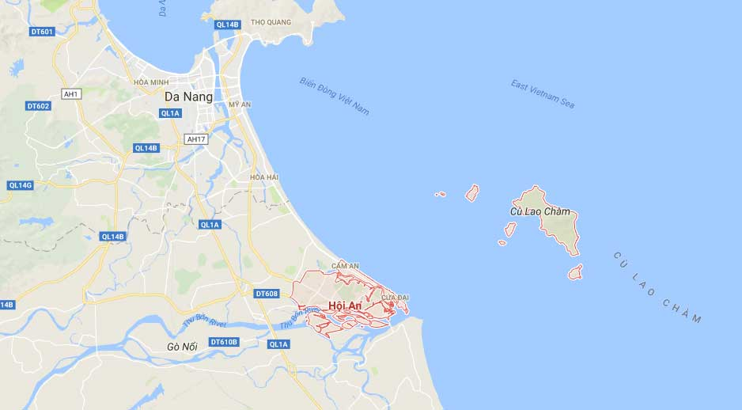
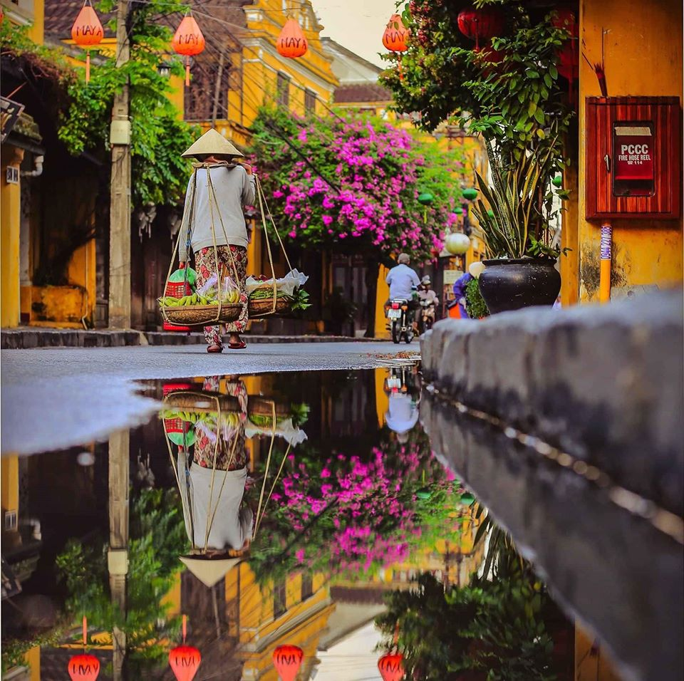
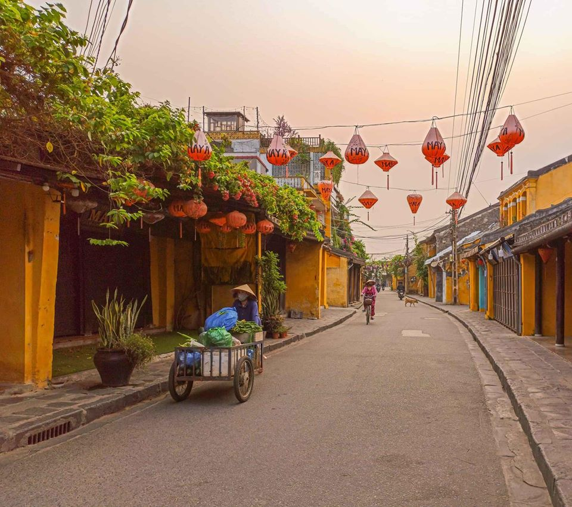
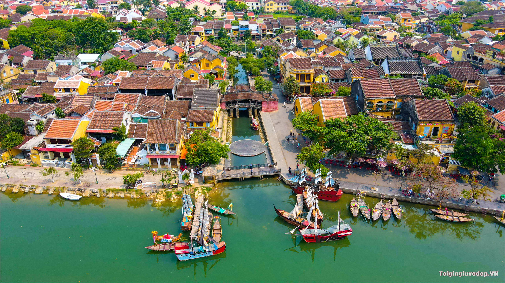

1. Vị trí địa lý
Thành phố Hội An thuộc tỉnh Quảng Nam có diện tích khoảng 63,55 km², là trọng tâm của cụm động lực phía Bắc vùng Đông của tỉnh Quảng Nam,
có quan hệ mật thiết với thành phố Đà Nẵng - vừa là đô thị lớn nhất Miền Trung, vừa là một trong những trung tâm kinh tế lớn của cả nước;
là điểm đầu tuyến của hành lang Bắc trong chiến lược kết nối phát triển Vùng Đông- Vùng Tây tỉnh Quảng Nam.

Phố cổ Hội An là một trong những thương cảng sầm uất nhất Đông Nam Á vào thế kỷ 17, 18. Nơi đây là điểm gặp gỡ và trao đổi hàng hóa của các thuyền buôn phương tây, Trung Quốc và Nhật Bản.
Cùng là nơi giao thoa giữa các nền văn hóa Nhật, Hoa, Việt còn được lưu giữ đến ngày nay. Phố cổ Hội An nằm bên cạnh dòng sông Thu Bồn thuộc thành phố Hội An, tỉnh Quảng Nam. Năm 1999, Tổ chức UNESCO đã ghi tên Hội An vào danh mục các di sản Văn hóa thế giới và vào ngày 24/8/2000.
2. Miêu tả phố cổ Hội An
-
Hội An với những kiến trúc truyền thống

Hội An nổi tiếng bởi vẻ đẹp kiến trúc truyền thống, hài hòa của những ngôi nhà, bức tường và cả những con đường.
Cùng với bao biến cố thăng trầm của lịch sử, phố cổ Hội An vẫn giữ những nét đẹp xưa cổ trầm mặc rêu phong trong từng mái ngói,
viên gạch, hàng cây… như chính nét bình dị trong tính cách, tâm hồn thuần hậu, chân chất của người dân địa phương.
Kiểu nhà ở phổ biến nhất ở Hội An chính là những ngôi nhà phố một hoặc hai tầng với đặc trưng chiều ngang hẹp, chiều sâu rất dài tạo nên kiểu nhà hình ống.
Những vật liệu chính dùng để xây dựng nhà ở đây đều có sức chịu lực và độ bền cao do đặc điểm khí hậu khắc nghiệt và bão lụt hàng năm của vùng này.
Thông thường, các ngôi nhà có kết cấu kiểu nhà khung gỗ, hai bên có tường gạch ngăn cách. Khuôn viên trung bình của các ngôi nhà có chiều ngang khoảng 4 đến 8 mét, chiều sâu khoảng 10 đến 40 mét, biến thiên theo từng tuyến phố.
Bố cục mặt bằng phổ biến của những ngôi nhà ở đây gồm: vỉa hè, hiên, nhà chính, nhà phụ, hiên, nhà cầu và sân trong, hiên, nhà sau ba gian, vườn sau.
Những ngôi nhà ở Hội An hầu hết được làm theo dạng hai mái, đa số nhà chính và nhà phụ không chung một mái mà là hai nếp mái kế tiếp nhau. Rất ít trường hợp mái nhà chính phủ lên cả phần nhà phụ. Ngược lại, đa số nhà cầu được lợp theo kiểu bốn mái.
Trên mặt bằng tổng thể thì nhà trước, nhà cầu và nhà sau được lợp bằng những mái riêng biệt. Ngói ở Hội An là loại ngói làm từ đất, mỏng, nung thô, mang hình vuông, mỗi cạnh khoảng 22cm và có dạng hơi cong. Khi lợp, đầu tiên người ta xếp một hàng ngói ngửa lên và sau đó tiếp tới một hàng ngói úp xuống.

Đường phố ở khu phố cổ được bố trí ngang dọc theo kiểu bàn cờ với những con phố ngắn và đẹp, uốn lượn, ôm lấy những ngôi nhà.
Dạo bước chân qua từng con phố nhỏ xinh và yên bình ấy, du khách không chỉ được thưởng thức những món ăn ngon mà còn thấy được một phần cuộc sống sinh hoạt hàng ngày của người dân phố Hội, một cuộc sống yên bình, giản dị.
3. Du lịch phố cổ Hội An lý tưởng nhất vào thời gian nào?
Du lịch phố cổ Hội An lý tưởng nhất là từ tháng 2 đến tháng 4 hàng năm bởi vào thời gian này tiết trời xuân mát mẻ, Hội An ít mưa & có nắng nhẹ rất thích hợp để khách du lịch đến tham quan, khám phá.

Tháng 5 đến tháng 8 nắng đẹp, tuy khoảng thời gian tháng 5 - tháng 6 thời tiết một số ngày nắng gắt cần chịu khó một chút nhưng bù lại đây là thời điểm tuyệt vời để lặn ngắm san hô tại Cù Lao Chàm.
Bên cạnh đó, nếu có kế hoạch du lịch Hội An vào các tháng khác, bạn hãy chủ động theo dõi dự báo thời tiết để có chuyến đi thuận lợi nhất!